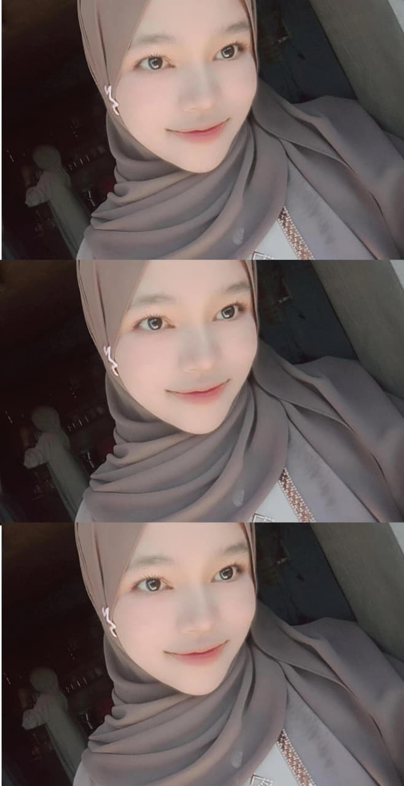
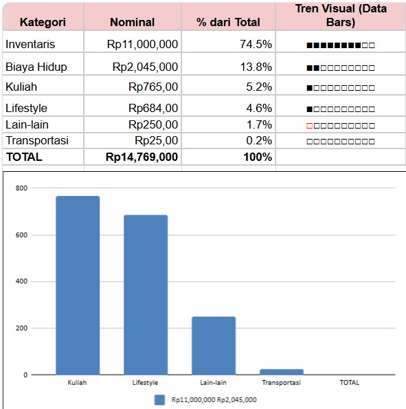
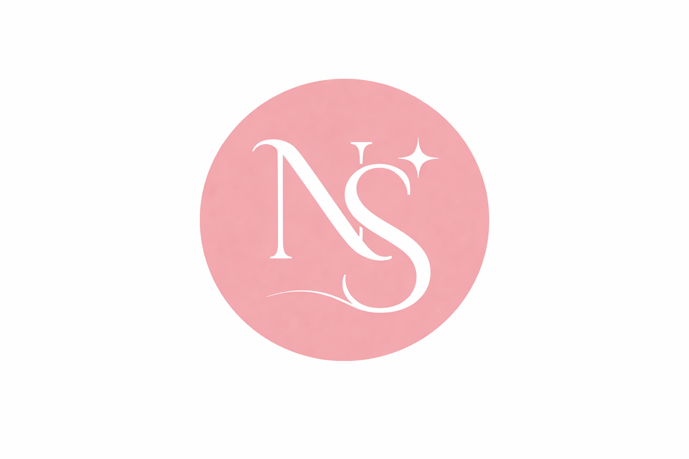

"Mahasiswi Teknik Informatika dengan pengalaman di bidang Accounting dan Administrasi. Terampil dalam Manajemen Basis Data (SQL), Microsoft Excel (Advanced), serta penggunaan software akuntansi. Saya menggabungkan logika pemrograman dan ketelitian pengolahan data untuk membangun sistem digital yang efisien, aman, dan terstruktur."

TOTAL PROJECTS
Innovative solutionsCERTIFICATES
Skills validatedYEARS EXP.
Learning journey

💬 Comments